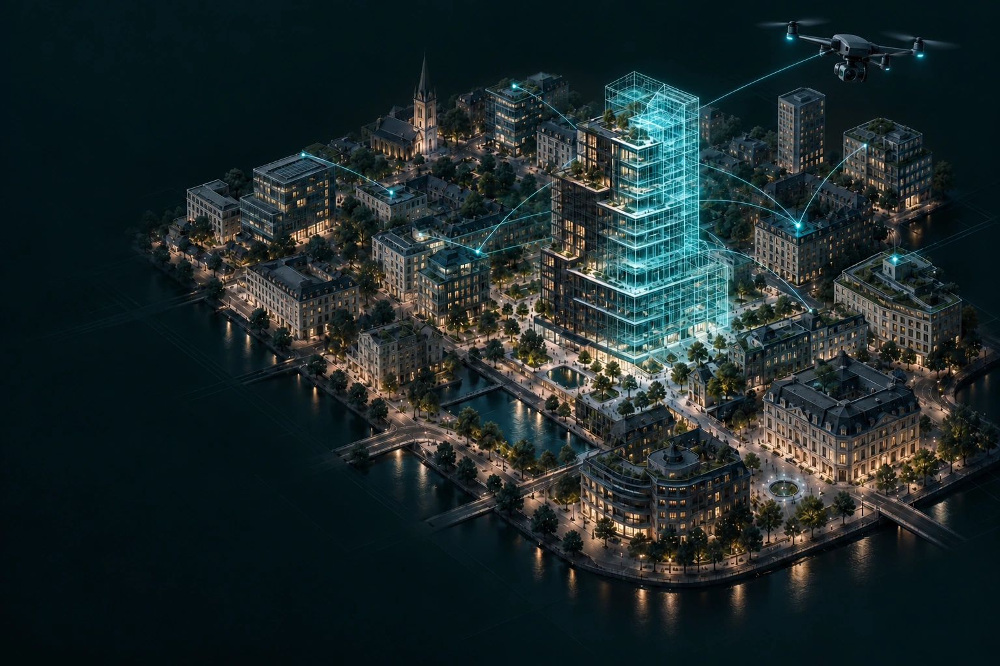
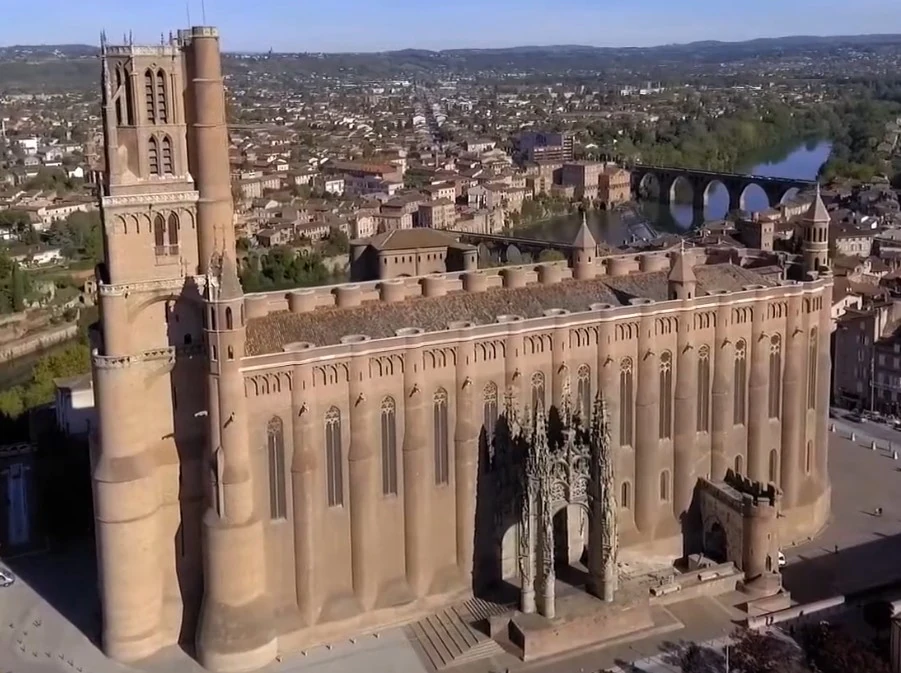
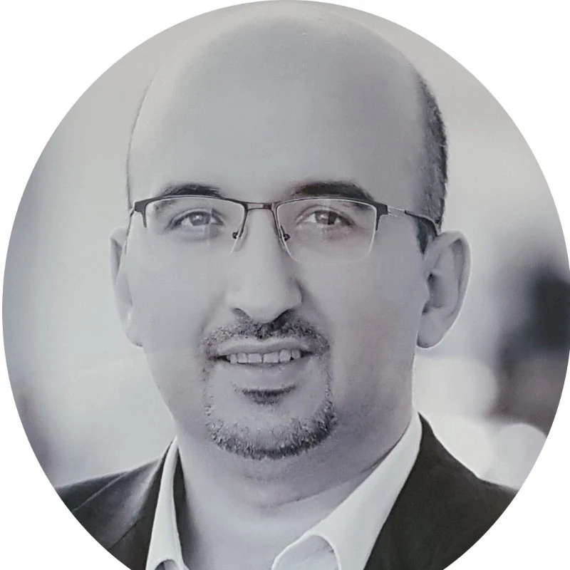

01
Reality → usable 3D
Transform photogrammetry, laser scans and CAD into efficient models for demanding real-time environments.
FROM PHYSICAL REALITY TO CONNECTED INTELLIGENCE
Digital twins that connect the world you see
with the systems that make it work.
We bring drone reality capture, real-time 3D and systems engineering together — for buildings, cities and complex environments.

DIGITAL TWIN CONCEPT VISUAL
01 / OUR EXPERTISE
A useful digital twin goes beyond a 3D model. It brings geometry, data and the way people work into one coherent system.
Transform photogrammetry, laser scans and CAD into efficient models for demanding real-time environments.
Connect 3D assets with IoT, building management and electrical, mechanical and communication systems.
Map dependencies, define the architecture and design how people, processes, assets and data work together.
Make complex situations tangible with immersive scenarios, serious games and practical professional training.
02 / SELECTED EXPERIENCE
Applied modelling, connected building environments and simulation. A closer look at the work behind our perspective.

WIREFRAME / X-RAYPHYSICAL WORLD ILLUSTRATIVE INTERIOR · DRAG TO COMPARE3D modelling of Albi Cathedral and the IMT Mines Albi campus for the EGCERSIS programme’s virtual-reality crisis-management training.
DFF contribution
Reality-based 3D models prepared for immersive environments.
CONNECTED BUILDINGS / INDUSTRY
Digital Twin modelling contributions to an EcoDomus pilot led by Schneider Electric.
IMMERSIVE LEARNING / HEALTHCARE
Interactive simulation and serious-game experience, including CLONE and telehealth education with INU Champollion.
03 / OUR APPROACH
Framework for Resilient Systems
Connect the challenge, the model and the response. Five capabilities help us design digital twins that stay useful as conditions change.
Developed by Dr. Feras Al-Chama · DFF Consulting
EXPLORE THE FIVE CAPABILITIES
Each capability informs the others as the system evolves.
F PURPOSE / SCOPE / PRIORITIES
Define what the system must protect, the decisions it should support and the conditions it may face. Agree the boundaries, stakeholders and criteria for success.
A shared problem definition, critical-asset scope and acceptance criteria.
ILLUSTRATIVE USE CASE / BUILDING FIRE
Identify the people, critical assets and access routes that the response team needs to understand. Agree which physical conditions the twin must track, how current the data must be and how to handle lost sensor coverage.
E GEOMETRY / DEPENDENCIES / RULES
Translate physical assets and their relationships into a structured model. Combine drone capture, laser scans and CAD/BIM with asset identities, system dependencies and operating rules.
A usable 3D asset model with explicit relationships and data connections.
ILLUSTRATIVE USE CASE / BUILDING FIRE
Map rooms, fire compartments, electrical systems and sensor locations in the 3D model. Use shared asset identifiers and spatial references so fixed readings, mobile sensors and drone observations can be related to the same physical environment.
R OBSERVE / INTERPRET / LEARN
Bring available sensor and operational information into the model’s spatial context. Make changes, update timing and missing information visible so people can judge the state of the system.
A contextual view of asset state, changes and the freshness of available data.
ILLUSTRATIVE USE CASE / BUILDING FIRE
Interpret available smoke, temperature and BMS streams alongside field observations. Relate changes to the affected assets, track the effects of response actions and flag missing or stale data for the team’s next assessment.
A SIMULATE / ASSESS / RESPOND
Use systems reasoning, simulation and suitable analytical tools to explore how conditions could develop. Help people compare options, choose responses and learn from the outcome.
Scenario assessments and response options that operators can review.
ILLUSTRATIVE USE CASE / BUILDING FIRE
Use the latest observations to compare scenarios involving changing fire conditions, affected equipment or lost sensor coverage. Help response teams review priorities and identify where additional mobile sensing could improve their understanding.
S LIVE STREAMS / ASSET UPDATES / CONTINUITY
Keep physical assets and their digital representation aligned through real-time sensor streaming and verified updates to asset condition, location and geometry. Combine fixed and mobile sensing to maintain that connection as conditions change, including during a crisis.
An asset-linked digital view combining live sensor streams and verified physical changes, with timestamps and data gaps visible.
ILLUSTRATIVE USE CASE / BUILDING FIRE
Stream available fixed-sensor data into the twin. If coverage is lost or more detail is needed, response teams can add mobile sensors, including thermal drones where appropriate. Locate and timestamp their readings and imagery in the model. Update confirmed asset damage, equipment locations and geometry changes, while distinguishing live observations from stale data and the last known state.
Observations guide assessment and response.
Lessons refine the objectives and the model.
Live streams and verified asset changes keep physical and digital context aligned.
The engineering workflow supports the framework, from preparing physical assets to putting connected models into use.
Bring together drone photogrammetry, laser scanning, CAD and existing BIM information. Define the useful level of detail, the asset scope and the questions the twin needs to answer.
Convert high-poly scans and detailed CAD into efficient low-poly assets. Retopology, texture baking and levels of detail preserve visual quality while preparing the model for real-time use.
Link model assets with the relevant IoT, BMS and engineering data. Design asset identifiers, interfaces and update flows so physical systems can be understood in their spatial context.
Shape operational interfaces, immersive training and crisis scenarios around the people using them. Validate the result against the agreed use case, data availability and deployment constraints.
04 / THE THINKING BEHIND DFF
DFF Consulting bridges applied research and hands-on engineering. We work across the boundaries between physical assets, software, data and people.
From a single building to a city-scale ambition, we help turn complex ideas into a clear architecture and a practical path forward.

FRANCE / INTERNATIONAL COLLABORATIONFOUNDER & CONSULTANT
François Charat
PhD-qualified engineer working at the intersection of digital twins, systems architecture and immersive technologies.
Connect with FerasExploring the next generation of smart-city infrastructure in Albi, with an emerging collaboration involving IMT Mines Albi and Georgia Tech.
Research direction05 / START A CONVERSATION
Bring us your environment, your challenge or your next idea.
Let’s define a useful first step.
Founder · DFF Consulting
contact@droneforfuture.comConversations in English,
French and Arabic.